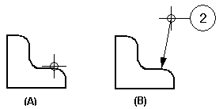
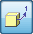
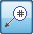

Place a balloon
You can place a balloon on a drawing view or on the model.
-
Choose the Balloon command
 from either of the following locations:
from either of the following locations:-
Home tab→Annotation group in the Draft environment.
-
PMI tab→Annotation group in the model.
-
-
(Specify balloon properties) On the Balloon command bar or on the Balloon Properties dialog box, set the options you want for balloon shape, height, angle, and whether you want to link to a parts list.
-
(Specify balloon text) In the text boxes on the command bar, you can type exact text to place in the balloon, or you can click the Property Text button to open the Select Property Text dialog box, where you can choose variable property text to be extracted from the current file or from model data.
-
Do one of the following:
-
(Place the balloon with a leader)
-
Set the Leader option on the command bar.
-
Click where you want to place the terminator end of the leader (A), and then click where you want to place the balloon (B).

-
-
(Place the balloon without a leader)
-
Clear the Leader option on the command bar.
-
Click on or near the element that you want to attach the balloon to, and then click again to place the balloon.
Even though it is not visibly attached, the balloon is associated with the element.
-
-
-
If you click a fastener system component to place a balloon, you can use the Show fastener system stack button on the Balloon command bar to automatically arrange the related balloons in a horizontal or vertical stack. The Link to Parts List option also must be selected.
-
The stack arrangement and text alignment properties for balloon stacks are specified on the General page (Balloon Properties dialog box). You also can drag one of the balloon stack edit handles to change the stack alignment interactively.
For more information, see Manipulating balloons.
-
In an assembly model, you can add PMI balloons that reference the model item numbers by selecting these options on the Balloon command bar:
-

Item number -

Item count
To reference assembly item numbers on a drawing, you must also select the Link to Parts List option on the command bar.
-
-
To place a model PMI annotation that references multiple elements instead of a single element, click Referenced Geometry
 on the command bar. To learn how to use this option, see Select multiple reference elements.
on the command bar. To learn how to use this option, see Select multiple reference elements.